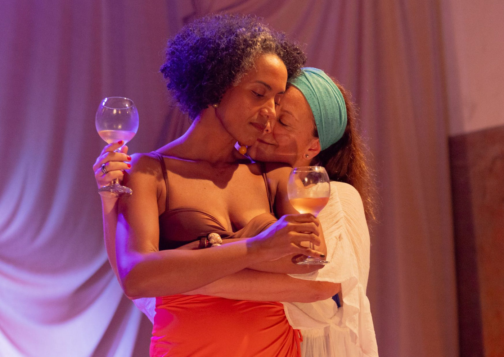

“Quando Um Dia” retorna ao Teatro Arthur Azevedo com olhar poético sobre o tempo e a maturidade feminina

Espetáculo gratuito do Grupo XIX de Teatro propõe reflexão sensível sobre desejo, silêncio e escolhas não vividas. Temporada de 12 a 22 de junho na sala multiuso do Teatro Arthur Azevedo
Após sucesso de crítica em sua estreia, o espetáculo “Quando Um Dia”, criação do Núcleo Corpo Urgente do Grupo XIX de Teatro, retorna aos palcos em curta temporada de 12 a 22 de junho de 2025, no Teatro Arthur Azevedo, em São Paulo. Com ingressos gratuitos, a montagem acontece de quinta a sábado, às 20h, e aos domingos, às 18h, na sala multiuso do teatro, com lugares limitados.
Dirigida e escrita por Juliana Sanches, a peça é inspirada na obra da escritora Doris Lessing, e mergulha nas camadas do tempo, da intimidade e da memória através da trajetória de três mulheres maduras interpretadas pelas atrizes-criadoras Evelyn Klein, Mara Helleno e Tasia d’Paula.
Mulheres, tempo e silêncio: um teatro que reverbera o corpo
“Quando Um Dia” é um convite ao olhar sensível e à escuta profunda das narrativas femininas silenciadas pela história. Em cena, duas mulheres compartilham experiências íntimas e profundas, revelando dores, desejos e memórias marcadas pela passagem do tempo. A peça levanta questões provocadoras: E se aquele dia tivesse sido diferente? E se a escolha fosse outra?
“O espetáculo é um convite para nos olharmos de outro jeito. Somos capazes de imaginar — e sentir — as infinitas versões da vida que deixamos de viver?”, questiona a diretora Juliana Sanches, que tem se destacado por montagens com elencos exclusivamente femininos e abordagens sensíveis sobre o corpo e a palavra.
A montagem parte de uma pesquisa sobre a dicotomia entre sensações físicas e verbalização, aprofundando o conflito entre o que se sente e o que se consegue dizer — especialmente após o confinamento da pandemia, que expôs silenciosamente as amarras do corpo feminino dentro de uma sociedade patriarcal.
Uma dramaturgia inspirada por mulheres
Durante o processo criativo, Juliana Sanches e o núcleo se alimentaram de obras criadas por mulheres — entre elas escritoras, dançarinas, artistas plásticas e poetisas — que instigaram as camadas de afeto, ausência e resistência presentes na cena.
A diretora é conhecida por trabalhos como Legítima Defesa, A Corda, Alice e O Tempo me Atravessando Dentro de Casa, reunindo atrizes de diferentes gerações para dar forma a experiências vividas (e muitas vezes caladas) pelo corpo feminino.
SERVIÇO | QUANDO UM DIA – GRUPO XIX DE TEATRO
📅 Temporada: 12 a 22 de junho de 2025 🗓
Sessões: Quintas a sábados, às 20h | Domingos, às 18h
📍 Local: Sala Multiuso do Teatro Arthur Azevedo – Av. Paes de Barros, 955 – Mooca, São Paulo – SP
🎟 Ingressos: Gratuitos (mediante reserva antecipada pelo Sympla)
🪑 Capacidade: 70 lugares por sessão
🕒 Duração: 70 minutos
👤 Classificação indicativa: 16 anos